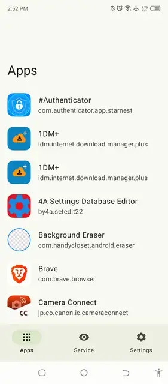
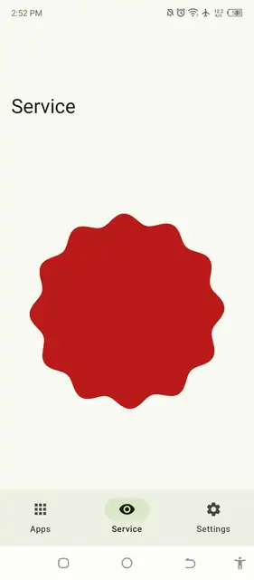

Geto
أدوات النظام
The only reason I created this app is to turn off that damn Developer Options when using a banking app. The only annoying thing about it is you have to go to the Settings app. When you turn off that switch button, your Developer Options configurations will be reset to default. The good thing is that
✓ ترخيص مفتوح (GPL-3.0-only) · آخر تحديث: 2026-07-19
1.17.3الإصدار
2.2 MBالحجم
GPL-3.0-onlyالرخصة
Open in Kanzتحميل APK (2.2 MB)
Download APK
SHA-256: 8bf453ce79521ee1f1306c86df5751a99df0a8cca59d2447307a9705b205ae22


امسح الكود لفتح صفحة التطبيق
Scan to open this app page
لو كنز مش متثبت عندك: نزّل متجر كنز.
Not installed? Get the Kanz store.